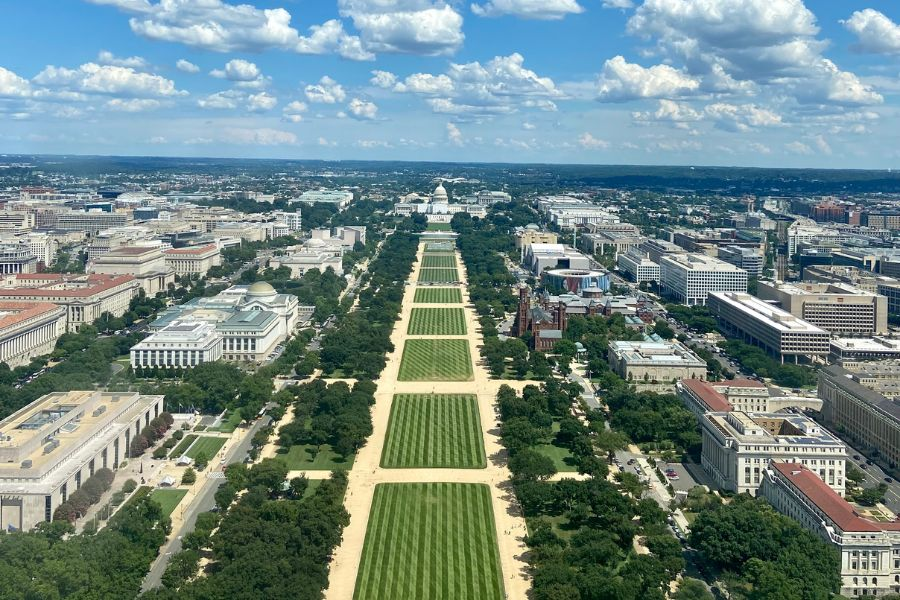
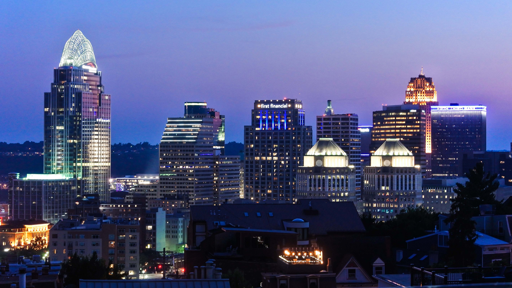
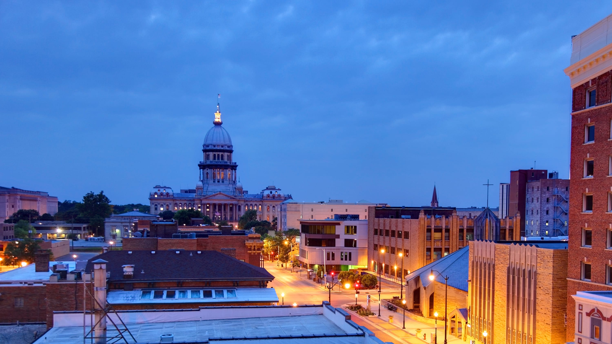
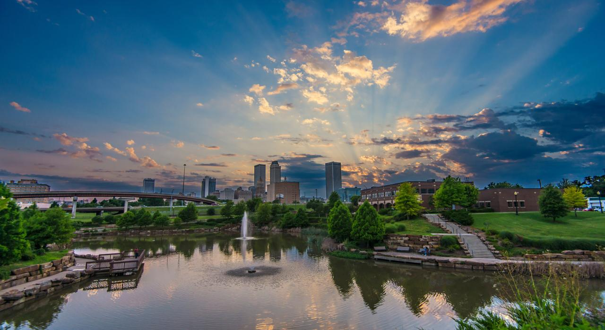

Rating all the cities I've lived in
Chicago (and surrounding Chicagoland area)
Lived here a majority of my life. Food here was definitely top tier but there was one place in the suburbs that had the best chicken I've had in my entire life and no other place I've been to has been like it. Lots of events and the people are ok. Like a mix of NYC rudeness and southern hospitality. There's also this one guy who stands outside a stadium and just condems peple all day who has his own wiki page so that's something. 8/10

DMV
The DMV, mainly Nothern Virginia, was interesting. First of all, the public transit there was immmaculate in my opinion. Chicago's was good but something about the effiency of the transit in DMV was very satisfying to me. The wealth disparity was also a lot more apparent. It was either luxury living or not so great living conditions. Didn't see much of anything in the middle. The food was good. Nothing crazy memborable about the food other than the seafood tasting fresher. Skipped out on the dmv brunch scene so that's going to skew this review a bit too. Overall, 7/10 BUT I do think if I go back and experience it now it'll be an 8 or 9 out of 10 just because the weather there was solid. Never too cold or too hot.
Cincinnati
Errrrmmmmmm Cincinnati Ohio felt like a fever dream to me. There was this faint smell of pee in the downtown area no matter where I went and it was relatively dirty compared to its size. They had this free trolley that went around the city so that was a plus. Food was just normal. They're apparently known for their chili but I've had canned chili better than their famous stuff. Would I go back here? No. The only positive thing I can think of is that it's a cheaper place to live in and the traffic was never crazy. 5/10
Springfield Illinois
3/10. Felt like very little changed about the town since Abe Lincoln died. It was like stepping back in time and not in a good way. It's a small town so i wasn't expecting much and even then I was still disappointed.
Tulsa OK
Tulsa OK has been well, ok. They're trying to give this little city a big city feel but it's just not possible. The Arkansas river is more mud than water half the time. Weather isn't terrible but I'm not a fan of it either. No tornadoes so far. And the people here are weird. Like, multiple times when I was buying something from the store, the cashier would ask if I'm from here because I don't have that weird tulsa aura. They're trying to get this city right and I feel like it may be someone's cup of tea but for me? I'm not drinking out of that cup. 6/10
